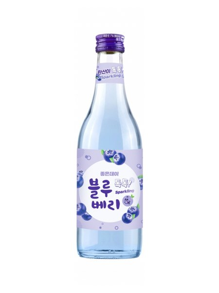

대한민국
소주
가이드
둘러보기
빠른 찾기
타임라인
지역별 브랜드
제조사 현황
제조 방법
좋은데이 블루베리
좋은데이 컬러 시리즈 1호 · 2021.11 탄산 리뉴얼

분류
플레이버
도수
13.5도
출시
2015(추정)
제조사
무학
지역
경상도
이름 유래
좋은데이
모 브랜드에 색상명+과일명을 병기하는 컬러 시리즈 전략.
블루
는 블루베리 과실색에서 직관적으로 가져옴. 각 색상이 곧 맛을 연상시키는 설계.
상세 연혁
좋은데이 플레이버 라인 중 첫 출시(2015년경). 블루베리 특유의 진하고 달콤한 향. 경남 지역 과일 소주 시장 선도.
무학의 다른 소주
화이트
좋은데이
좋다카이
청춘소주 무학
좋은데이 부산갈매기19
좋은데이 부산갈매기16
좋은데이 유자
좋은데이 복숭아
엔조이 오리지날 사과
엔조이 오리지날 배
엔조이 스파클링 사과
좋은데이 깔라만시
좋은데이 민트초코
좋은데이 석류
좋은데이 톡
지역별 소주 브랜드 전체 보기 →